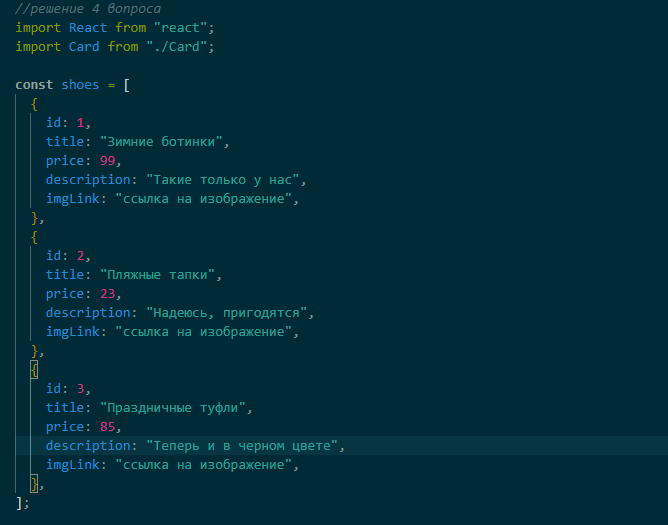
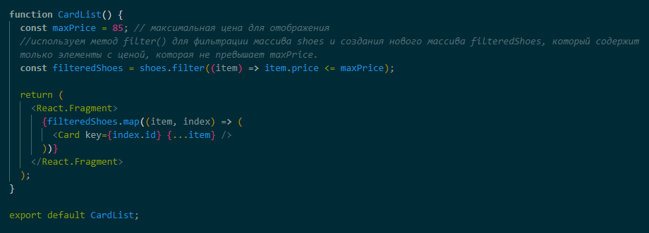
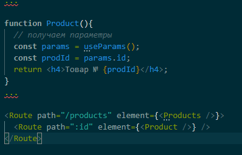
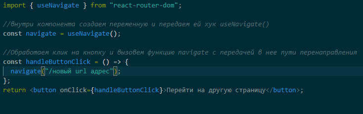

Ответ: Последовательность, в которой перечислены Route, не имеет значения, так как компонент Routes умный и нарисует самый подходящий путь. Следовательно отрисуется компонент Users.
Ответ: Страница пользователя 12345
Ответ: индекс элемента (положение элемента в массиве).
Ответ:


Ответ: Маршруты могут принимать параметры. Параметр имеет следующую
форму определения: ":название_параметра".
Например:

Ответ: в отличие от element и render, props children будет всегда отображаться независимо от того, сопоставляется ли условие в path или нет.
Ответ: Во время перехода по страницам в компоненте Routes происходит проверка на соответствие текущего адреса и адресов, указанных в Route. Чтобы включить строгую проверку соответствия пути, нужно добавить в компонент Route свойство exact.
Ответ: useMatch возвращает данные соответствия о маршруте по заданному пути относительно текущего местоположения.
useLocation возвращает текущий locationобъект. Это может быть полезно, если вы хотите выполнять какой-либо побочный эффект при каждом изменении текущего местоположения.
useNavigate возвращает функцию, которая позволяет программно перемещаться по заранее написанному сценарию.
Ответ:
